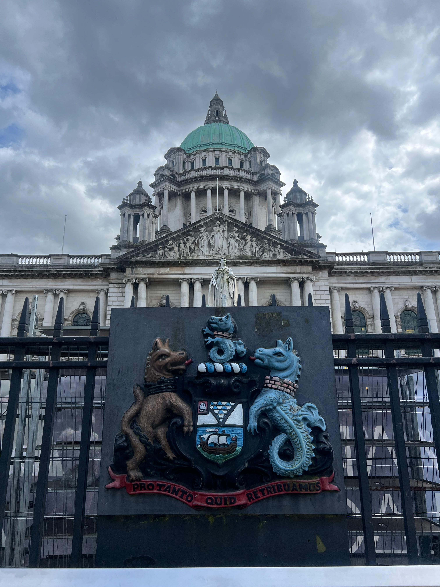
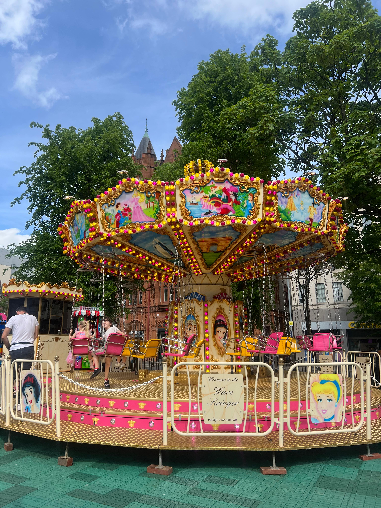
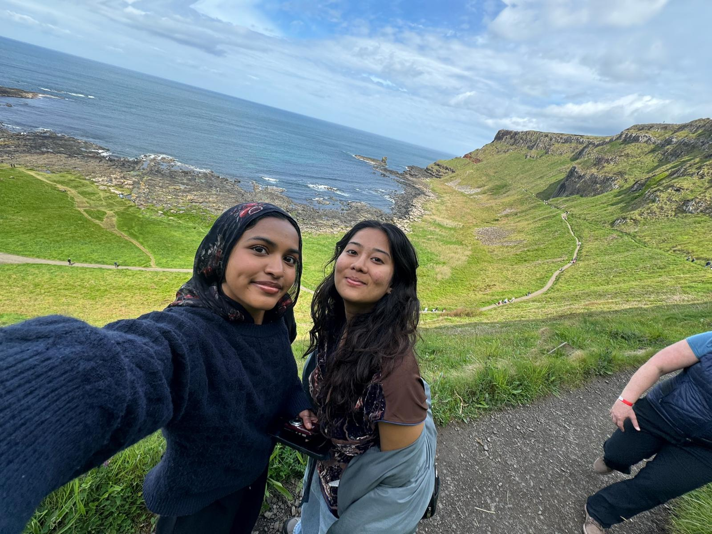
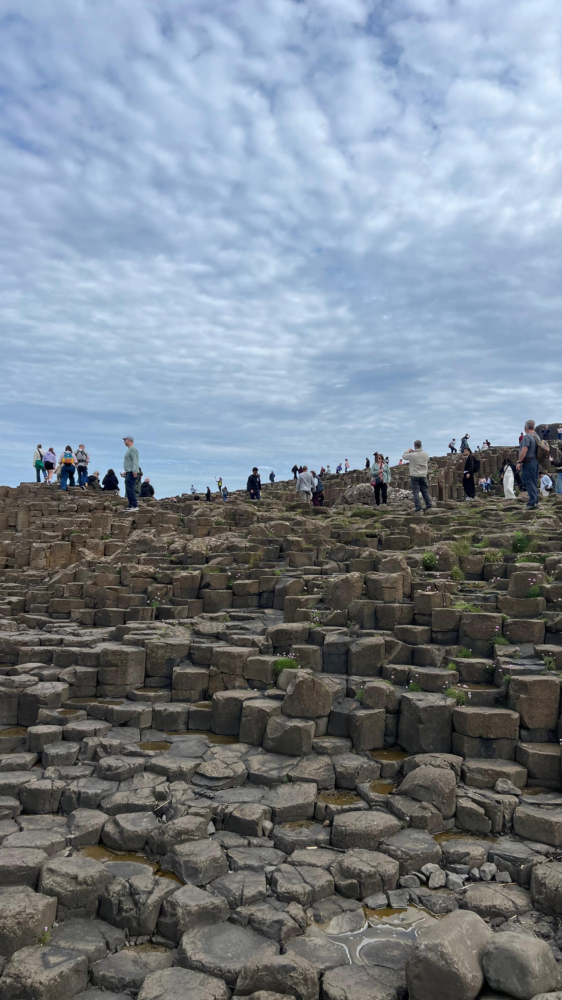
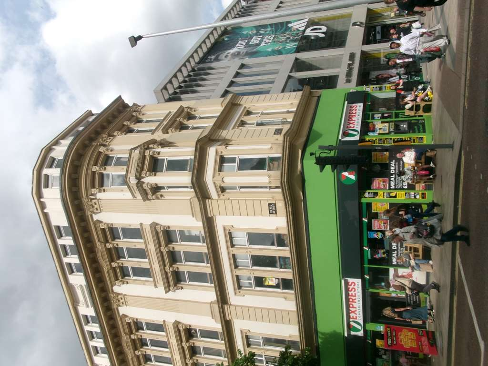
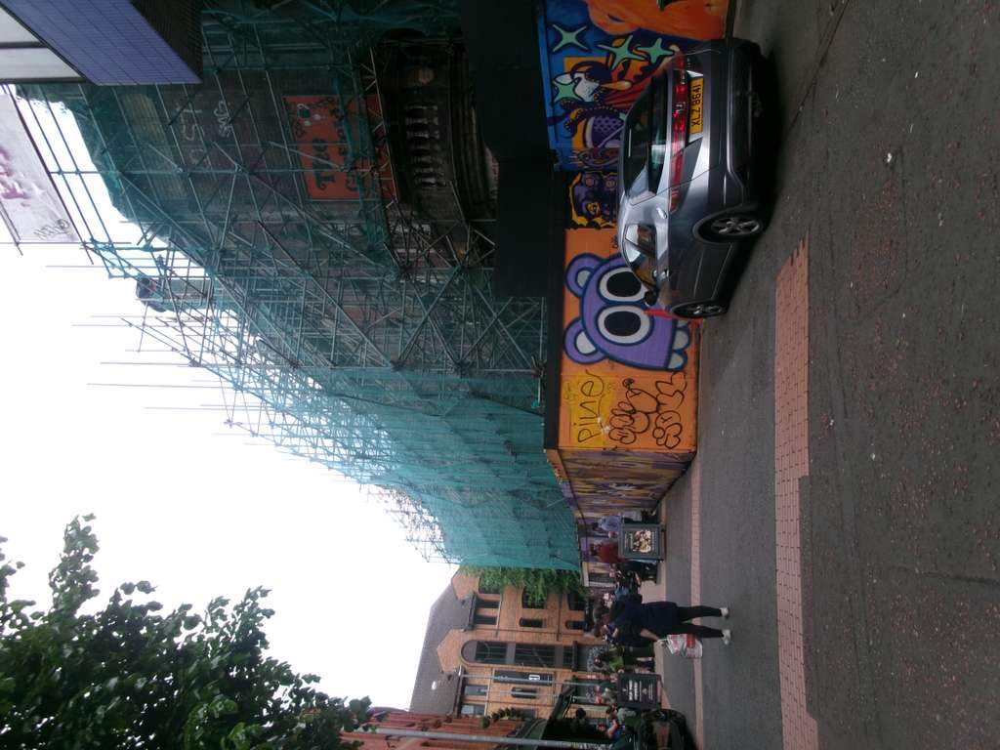
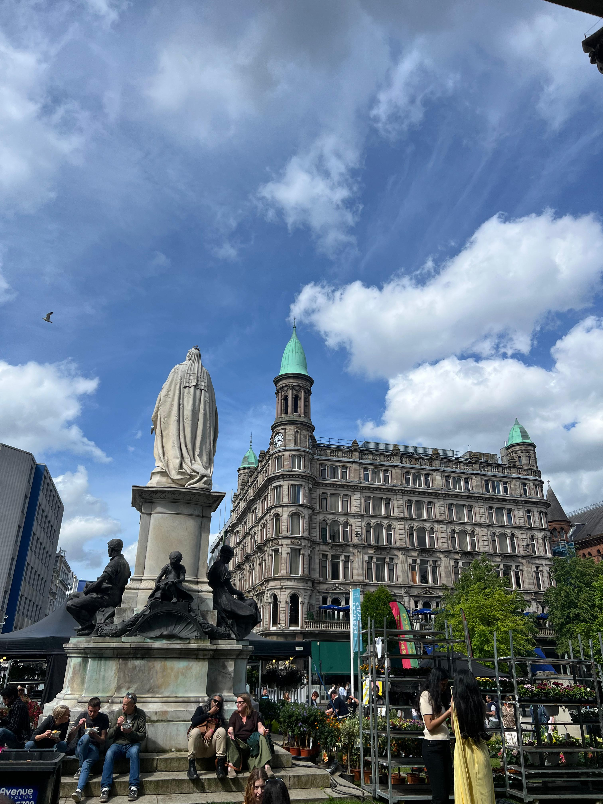
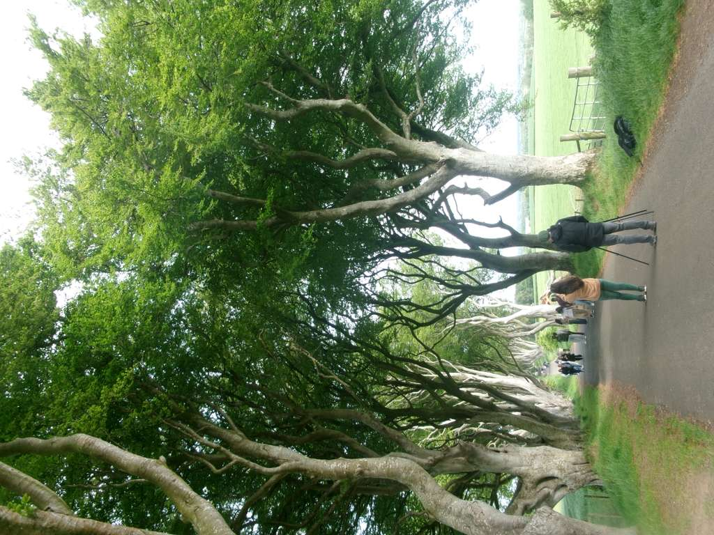
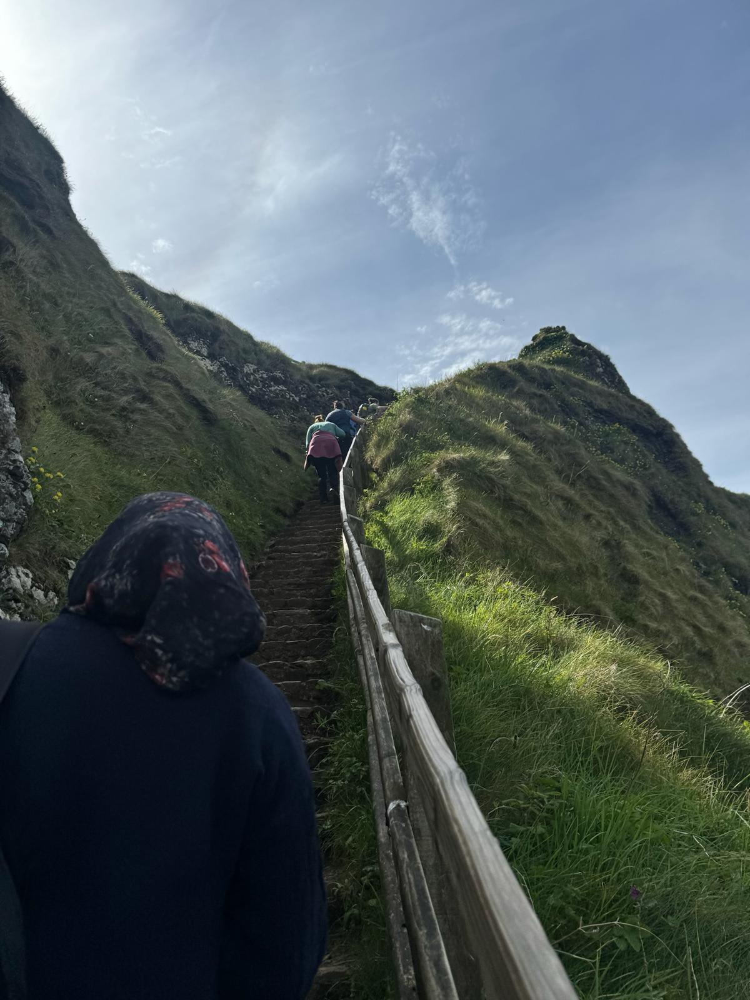
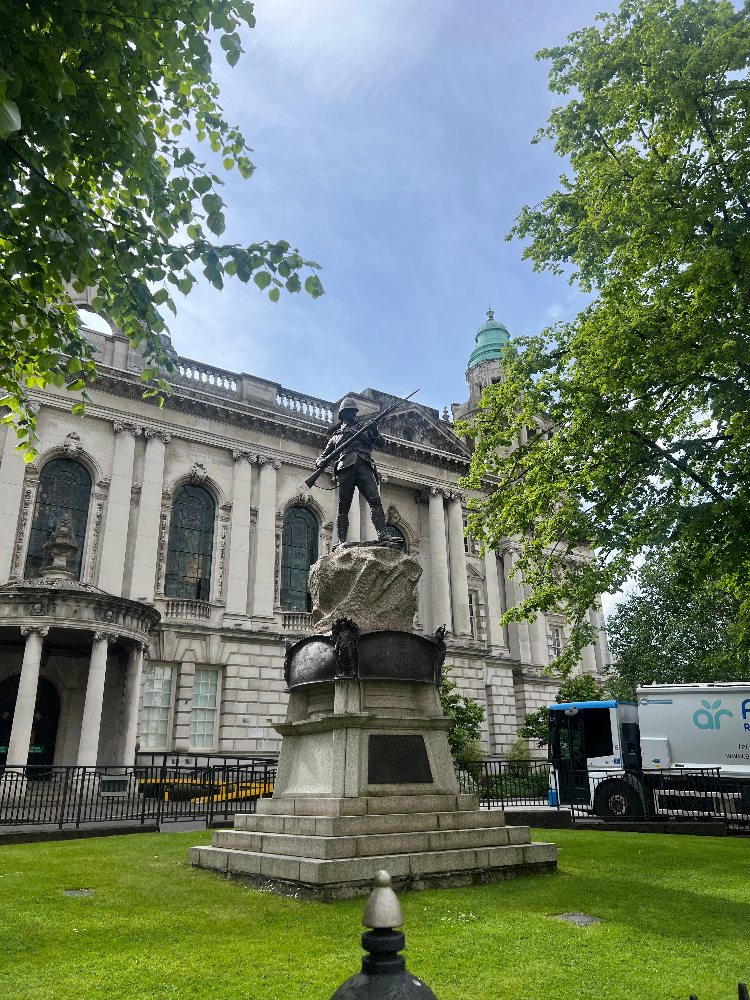

First Impressions
Belfast was a big culture shock for me, I didn't expect the city to be so big and expressive. The people and the historical architecture were very different from Dublin. I learned a lot about the strong and divided political beliefs are the community in Belfast, and how they also have other country flags that they support other than Ireland.
Things I Noticed
- Building designs felt similar to cities in the UK like London
- Very large city with wide sidewalks
- Extremely diverse population of people
- Many outfits and styles felt alternative, grunge, artsy, and UK-inspired
What I Recommend
If you are on a short trip and want to hit every landmark, I recommend doing a bus tour day trip to Belfast. The one I did was included 'The Dark Hedges', 'Giants Causeway' and downtown Belfast. its a 12 hour trip from 6am to 6pm, but defiently worth it since a lot of these areas are in rural places that is hard to use public transport to get too, unless you only want to see downtown Belfast. A great way to spend yoru time is going to the spring market around late May, every year around different cities in Ireland there are huge festivals and markets hosted when the weather gets warm.
Photo Gallery









